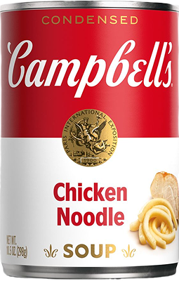

The Famous Crabsolutely Soup
100% Beglian Organic Crab Soup

What the heck is that?
Well, this is Crab Soup — bold, tasty, and just a little bit crabby.
Handcrafted in Belgium with 100% organic goodness. It's so good you'll start speaking fluent "crab."
Why you must buy this amazing soup?
- Pure Belgian Craftsmanship - Handcrafted by people who take soup as seriously as chocolate and beer.
- 100% Organic Ingredients - No weird stuff, just honest seaside goodness.
- Rich in Protein - For those who want muscles like a crab (sideways walking optional).
- Boosts Happiness - Scientifically unproven, but highly likely after the first spoonful.
- Eco-Friendly Packaging - Because the ocean deserves love too.
- Quick & Convenient - Open, heat, and enjoy — no crab fishing license required.
- Made with Real Crab - Not “crab-flavored,” not “crab-inspired” — the real deal.
In soup they trust!
"I opened the can, took one spoon, and boom — I was instantly teleported to the Belgian coast. Seagulls started screaming in my living room. 10/10, would eat again (after cleaning the mess)."
"I don't even like seafood, but this soup changed me. I called my ex just to tell him how happy I was now. He didn't understand, but that's okay — the soup does."
"After one bowl, my cat started respecting me again. I don't know what's in this soup, but it's clearly magic. If I could marry it, I would."
Why Choose Our 100% Belgian Bio Crab Soup?
Because it's not just soup — it's a seaside experience in a spoon. Packed with real crab, pure Belgian love, and zero nonsense, it's creamy, comforting, and dangerously addictive. Whether you need a quick lunch, a warm hug in a bowl, or just an excuse to feel fancy — this soup's got you covered.
Go on, treat yourself. Your taste buds deserve a vacation.